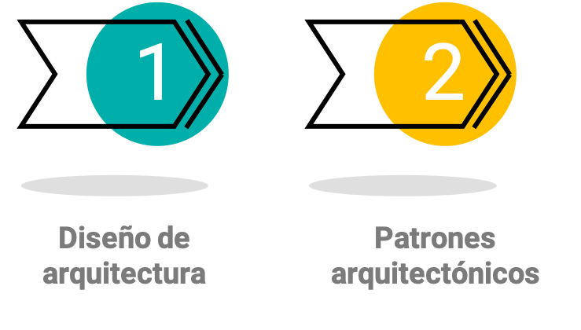
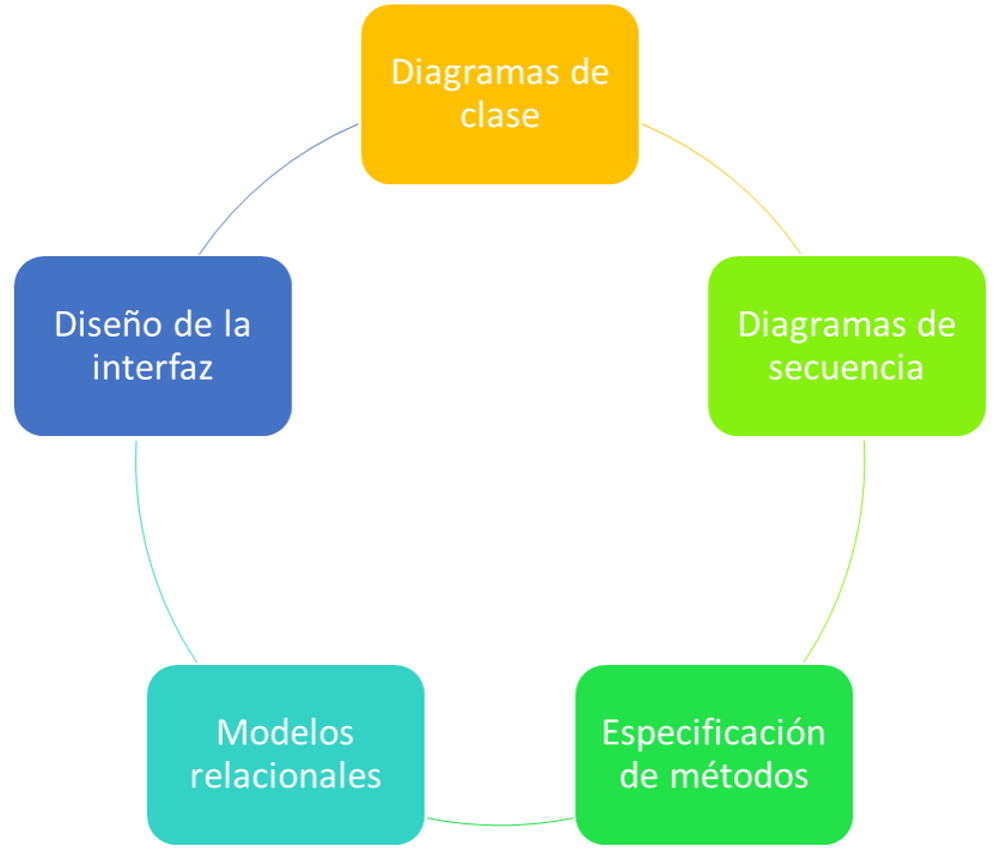
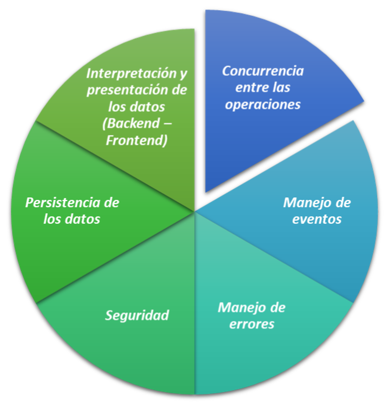

Unidad 10: Diseño de arquitectura y patrones#
Contenido de la unidad#
Cuando hablamos de diseño de arquitectura y patrones arquitectónicos, estamos refiriéndonos a la estructura y organización de un sistema, y cómo las diferentes partes de ese sistema interactúan entre sí.
Diseño de software#
La esencia del diseño de software es la toma de decisiones sobre la organización lógica de los elementos que conforman el software.
Niveles de abstracción#
Visión general del proceso#
Diseño de software: Modelos de diseño detallado#
Aspectos a considerar en el diseño de software#
Patrones y estilos arquitectónicos#
Todos los patrones son estilos arquitectónicos. Pero no todos los estilos son patrones arquitectónicos.

Patron
Es una solución general y reutilizable a un problema que ocurre en un contexto particular. Es una solución recurrente a un problema recurrente.
Estilo
Es un nombre dado a un diseño arquitectónico recurrente. No existe para resolver un problema.
Note
Los patrones arquitectónicos son soluciones más concretas y específicas a problemas comunes en la arquitectura de software, mientras que los estilos arquitectónicos son descripciones más generales de cómo se pueden organizar y estructurar los sistemas de software.